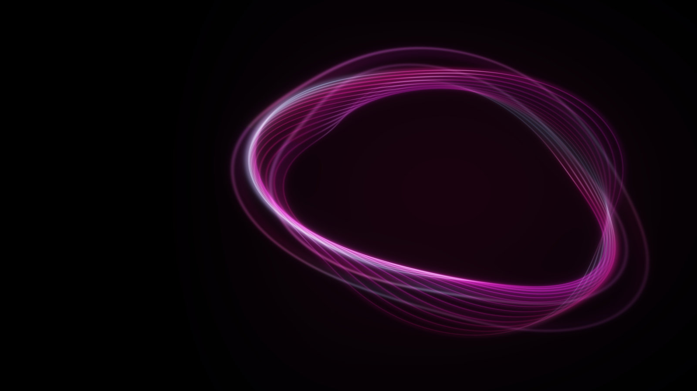
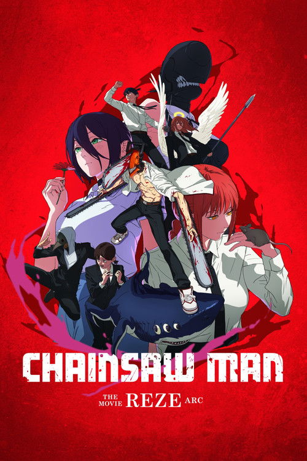
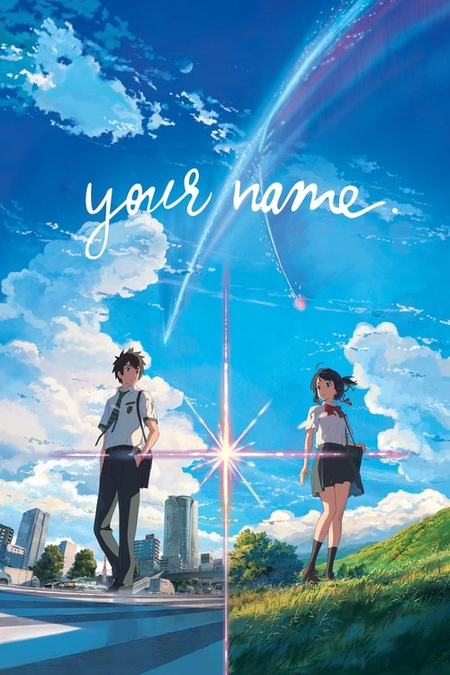
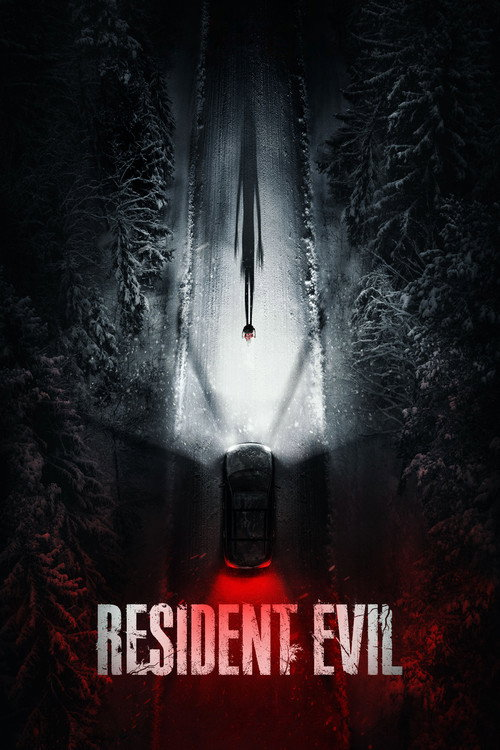
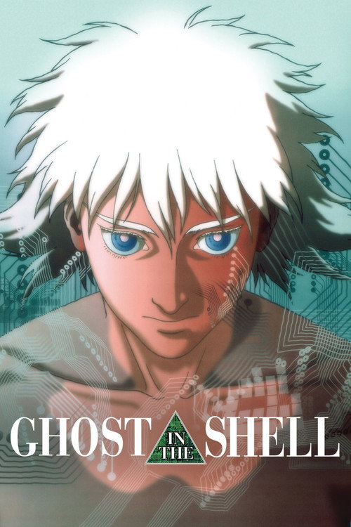
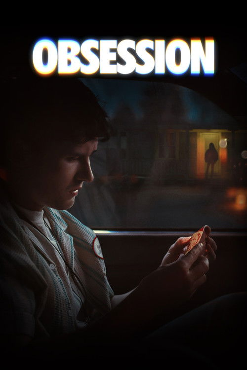

Follow your curiosity.
Search TMDB, AniList, and MusicBrainz. Go from “what’s that called?” to your next favorite.

Movies. Series. Anime. Music.
One self-hosted archive for everything you’re into.


One view. Your whole collection.
Cult films. Entire seasons. Anime deep cuts. Albums on repeat. Keep all of it together, without losing what makes each one different.




Search TMDB, AniList, and MusicBrainz. Go from “what’s that called?” to your next favorite.
Movies and series get their own workflows. Anime films and seasons stay distinct, too.
Artists, albums, and individual tracks. With quality profiles for FLAC, MP3, and AAC.
The right resolution. The right format. The release you actually want. Set your quality profiles and let Zarr do the sorting.
Inspectable scores make your release preferences explicit.
Separate TRaSH profiles for anime films and series, with ranked quality groups and custom formats.
Automatically upgrade eligible anime releases until your quality and score targets are met.
Discovery, release selection, transfers, and organization. A complete route from the next obsession to your own library.
Find a title. Pick your profile.
Make room in your collection.
Usenet with SABnzbd.
Torrents with qBittorrent.
Track progress in real time.
Import and organize completed files.
Give the assistant your taste, your mood, or a wonderfully specific request. Get recommendations with context, powered by the OpenRouter model you choose.
Rate what you love. Keep a history of your taste. Discover more of what makes it yours.
Self-hosted. Open source. MIT licensed.
Your archive lives on your machine, with connections and preferences managed in the UI.
Have Docker ready? Bring up Zarr and its bundled download clients, then make yourself at home.
Read the installation guide# Your archive, in three commands.
$ git clone https://github.com/acidmiku/zarr.git
$ cd zarr
$ docker compose up -d --buildThen open localhost:9876
Zarr + SABnzbd + qBittorrentZarr discovers, downloads, and organizes your media. Use your preferred media player to watch or listen to the files in your library.
Yes. Import existing files with metadata matching, and use library scans to reconcile media you already organized.
You can open the library immediately. Add metadata services, download connections, indexers, Usenet servers, and your AI provider through Quick start or Settings.